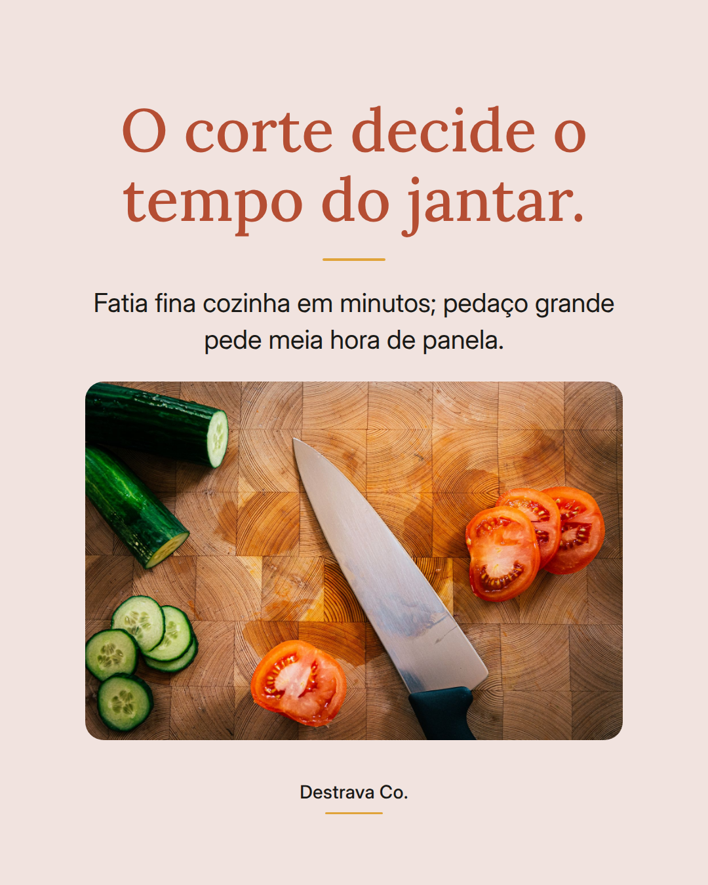
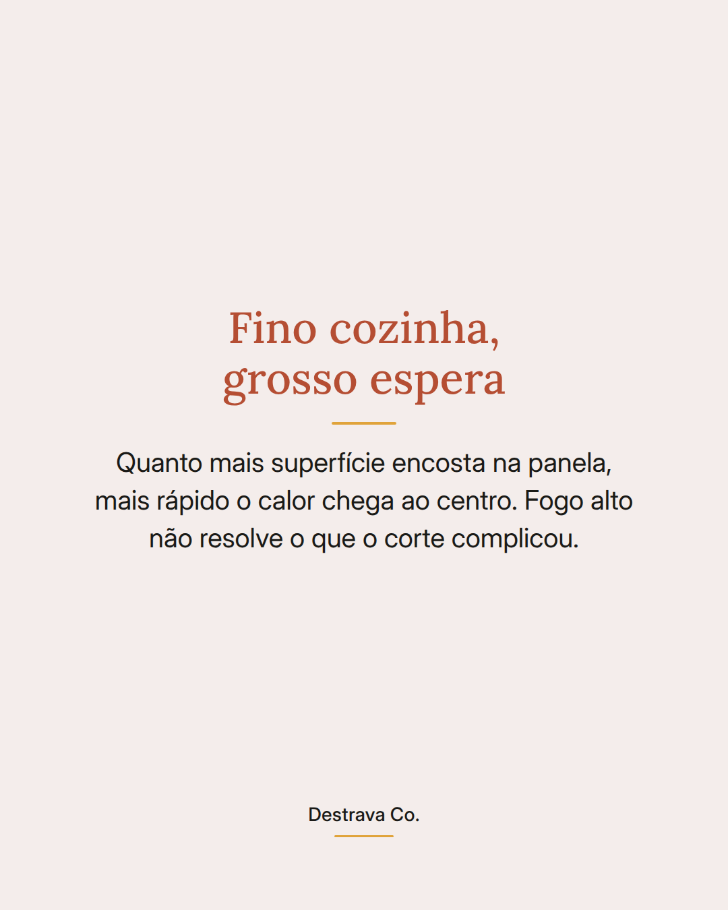
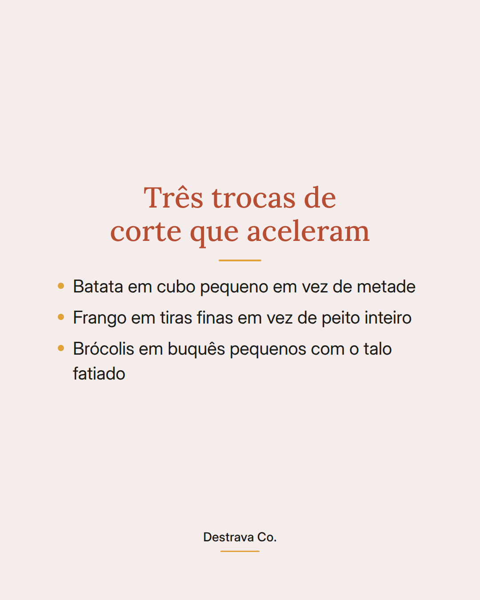
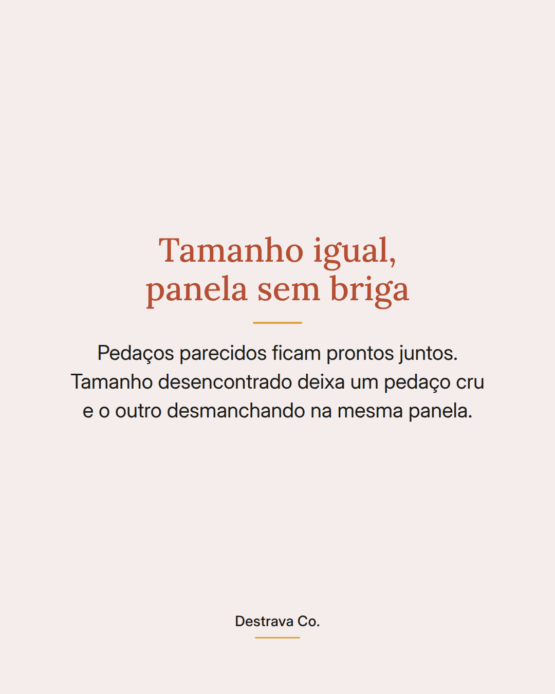
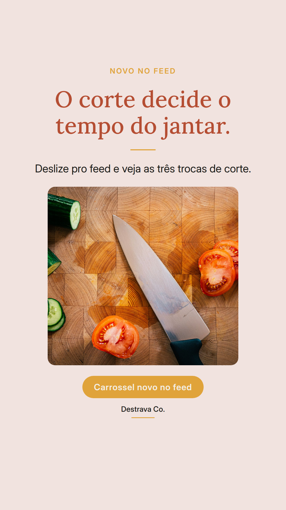
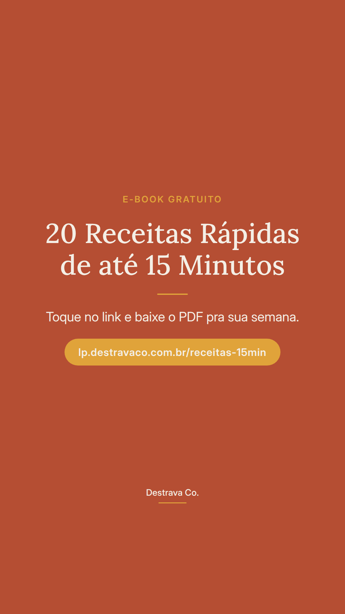

Corte fino cozinha rápido: o jantar não demora pelo fogo, demora pelo tamanho do pedaço.
Receita rápida começa na tábua. Cenoura em rodela fina, frango em tiras, batata em cubo pequeno: tudo encosta mais na panela e fica pronto antes.
E um detalhe que muda o resultado: mantenha os pedaços parecidos entre si. Quando um vem grande e outro miúdo, um fica cru e o outro desmancha no mesmo prato.
Salve pra lembrar na hora de picar e compartilhe com quem chega tarde em casa e ainda precisa resolver o jantar.
Se quiser os cortes já prontos dentro de cada preparo, o PDF gratuito com 20 receitas de até 15 minutos está esperando no perfil.